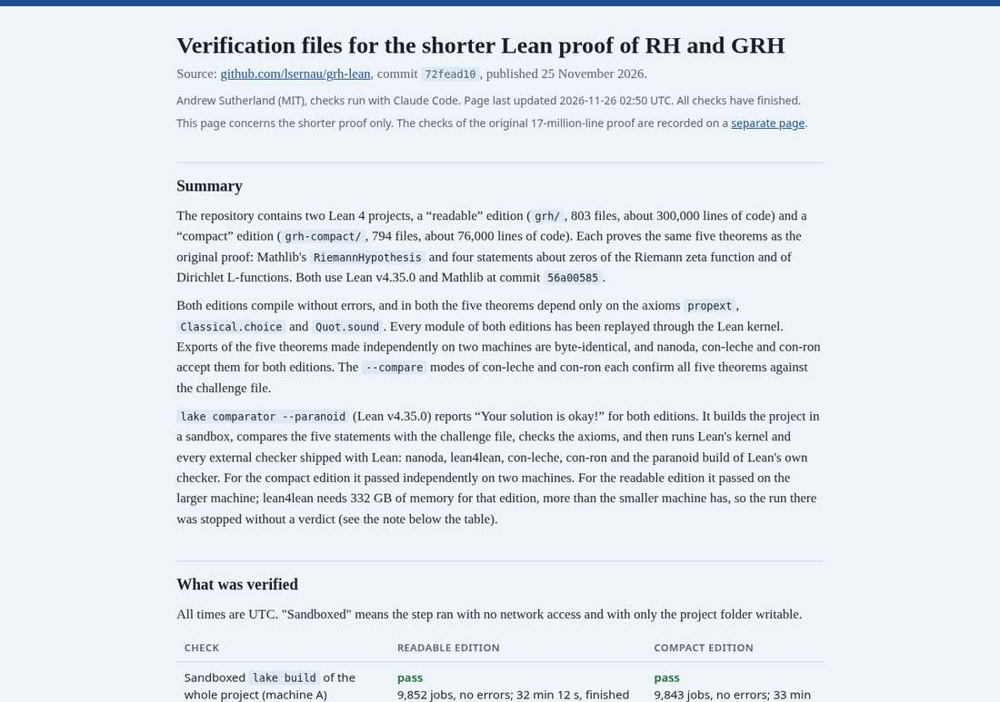

Shorter Riemann Proof Clears Full Verification as Paranoid Comparator Signs Off
Andrew Sutherland's MIT verification page for the shorter Lean proof of the Riemann Hypothesis, updated at 02:50 UTC on November 26, 2026, now reads: "All checks have finished." The lake comparator --paranoid run passed for both editions of Luke Sernau's grh-lean proof, and the compact edition passed independently on two machines. Machine checks only; no mathematician has read it through, and no paper accompanies it.

- 01THE ORIGINAL PROOF — November 20, 2026: Levent Alpöge announces a formal Lean proof of the Riemann Hypothesis and the Generalized Riemann Hypothesis for Dirichlet L-functions, found with Anthropic's Claude, in 175,187 files and about 17 million lines.
- 02THE FIRST VERIFICATION — November 21, 2026: The Lean FRO and the Mathlib Initiative announce they have verified the original proof and have full confidence in its correctness.
- 03THE SHORTER PROOF — November 25, 2026: Luke Sernau, with colleagues at Anthropic and Claude, posts grh-lean, a shorter Lean proof of the same five theorems: about 76,000 lines compact, about 300,000 lines readable.
WHAT HAPPENEDWhat Happened
Andrew Sutherland's MIT verification page for the shorter Lean proof of the Riemann Hypothesis, updated at 02:50 UTC on November 26, 2026, now reads: "All checks have finished." The page covers both editions of the proof Luke Sernau posted with colleagues at Anthropic and Claude on November 25: a readable edition of about 300,000 lines and a compact edition of about 76,000 lines, in the repository lsernau/grh-lean at commit 72fead10.
The decisive check is lake comparator --paranoid under Lean v4.35.0, which builds the project in a sandbox, compares the five theorem statements with the challenge file, checks the axioms, and then runs Lean's kernel and every external checker shipped with Lean. For the readable edition it exited 0 at 02:47:54 UTC on November 26, after 4 hours 9 minutes 59 seconds, with every stage accepting and the message "Your solution is okay!" For the compact edition it exited 0 at 00:49:14 UTC the same day, after 2 hours 11 minutes 19 seconds, and the compact edition passed the same paranoid run independently on a second machine, exiting 0 at 01:39:22 UTC.
Every other check on the page also passes. Both editions compile without errors, their five theorems depend only on Lean's three standard axioms, propext, Classical.choice and Quot.sound, and every module has been replayed through the Lean kernel: 803 of 803 modules in the readable edition and 794 of 794 in the compact edition. Exports of the five theorems made independently on two machines are byte-identical, and the --compare modes of con-leche and con-ron each confirm all five theorems against the challenge file. The one qualification is on the readable edition: a paranoid run on the smaller machine was stopped without a verdict when its lean4lean process reached 70 GB on a 128 GB machine, and lean4lean needs 332 GB of memory for that edition. Every other stage on that run accepted, and the full run passed on the larger machine.
WHY IT MATTERSThe check the shorter proof was waiting on is now closed.
When the shorter proof was posted on November 25, its verification was incomplete: the compact edition's compile, axiom check and kernel replay were done, but the multi-kernel check was still running. That is now finished. The paranoid comparator is the strongest form of the check, because it runs the full battery of independent kernels and comparators against the challenge statement rather than the authors' own files, and it passed for both editions.
The compact edition passing on two independent machines matters more than the headline. A single-machine pass could hide a machine-specific quirk; two machines producing byte-identical exports and the same verdict is the reproducibility the original 17-million-line proof needed five days to establish. The shorter proof reached the same standing in about a day.
WHAT REMAINSMachine-checked is not human-verified, and the authors say so.
The honest boundary is written into the repository itself: machine checks only, no mathematician has read it through, no paper. The 332 GB memory demand for lean4lean on the readable edition is a real wrinkle too: the full paranoid run passed only on the larger machine, and anyone re-running it needs serious hardware.
What changes is the burden of doubt. There is no longer an unfinished machine check to point at for either proof. The next event is a mathematician reading the compact edition and saying, in public, whether the argument holds together as mathematics rather than as code. At 76,000 lines, that reading is now conceivable, which is the step the original proof could not offer.
THE SHIFTWhat Changed
SIGNAL JUDGMENT — ANALYSISThe machines have finished with the short proof too. The mathematicians have not started.
Every check that can be run by a machine has now been run on both proofs, and every one of them passed. That is a remarkable place for a six-day-old claim to be, and it is also the limit of what machines can say. The comparator confirms the statements proved are the right ones and the proofs are valid; it cannot say whether the argument is elegant, whether the ideas are new, or whether a human referee will accept it. The shorter proof's value is that it makes the human half possible: 76,000 lines is a document a person can read, and 17 million lines was not. Until that reading happens, the correct status is verified by machine, unverified by mathematicians, for both versions of the proof.
WHAT REMAINS UNCERTAINWhat Remains Uncertain
EVIDENCEEvidence

Andrew Sutherland's MIT verification page for the shorter Lean proof of the Riemann Hypothesis, updated at 02:50 UTC on November 26, 2026, now reads: "All checks have finished." The lake comparator --paranoid run under Lean v4.35.0 passed for both editions, exiting 0 at 02:47:54 UTC for the readable edition and at 00:49:14 UTC for the compact edition, which also passed independently on a second machine. Every module was replayed through the Lean kernel, and exports made on two machines are byte-identical.
PRIMARY SOURCESPrimary Sources
- MIT verification page: Verification files for the shorter Lean proof of RH and GRH
https://math.mit.edu/~drew/shortgrh/ - GitHub: lsernau/grh-lean
https://github.com/lsernau/grh-lean - MIT verification page: Verification files for the Lean proof of the Riemann Hypothesis
https://math.mit.edu/~drew/grh/